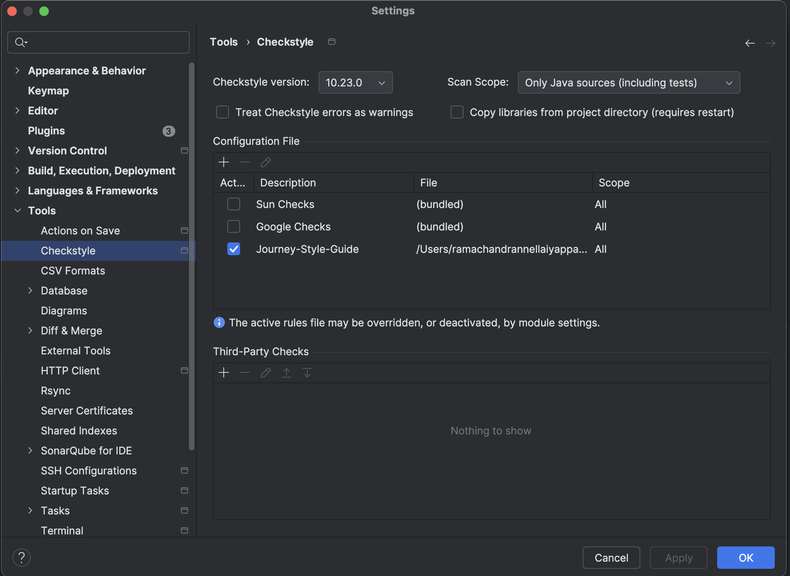
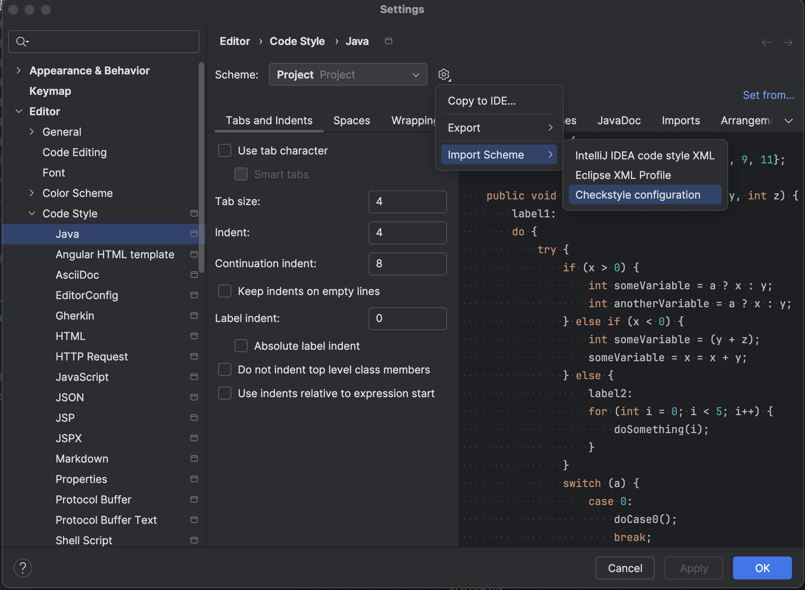

Automating Java Style Guide Enforcement with Checkstyle and OpenRewrite
TL;DR: Checkstyle is a powerful static code analysis tool that helps developers consistently enforce coding standards and best practices in Java projects. When integrated with OpenRewrite, it enables automated code style enforcement and seamless improvements to code quality. This article offers a comprehensive overview of Checkstyle, guides you through its integration with OpenRewrite, and explains how to configure and customize rules tailored to your projects.
Introduction
In fast-moving development teams, maintaining clean, consistent, and secure code isn't just about writing better code — it's about enforcing it automatically. Linters like Checkstyle help highlight violations of coding standards.
But here's the challenge many teams face: Checkstyle tells you what's wrong, but it doesn't fix it. Developers get the warning, maybe even a failed build — but unless fixing it is frictionless, these issues often get pushed down the backlog.
That's where combining Checkstyle and OpenRewrite becomes powerful.
This article walks through how to:
- Enforce consistent style and code quality with Checkstyle
- Use OpenRewrite to automatically refactor and fix code based on those rules
- Integrate both tools into your IDE, build system, and CI/CD pipeline
- Create custom rules to enforce your team's coding standards
- Suppress rules for specific cases without cluttering your codebase
Checkstyle
Checkstyle is a static code analysis tool for Java that helps developers follow coding standards by checking source code against a defined set of rules.
It's widely used to:
- Enforce formatting (indentation, import order, braces)
- Catch common mistakes (magic numbers, unused imports, redundant modifiers)
- Ensure code quality (Javadoc comments, naming conventions, cyclomatic complexity)
- Promote best practices (final variables, method length, class design)
- Detect potential bugs (null checks, exception handling, resource management)
- Encourage consistency (line length, whitespace, naming conventions)
- Facilitate code reviews (automated checks, reporting, integration with CI/CD)
OpenRewrite
OpenRewrite is a powerful-automated refactoring tool for Java (and other JVM languages) that analyzes source code using an Abstract Syntax Tree (AST) and applies safe, opinionated transformations.
Unlike linters, it doesn't just tell you what’s wrong — it actually rewrites your code for you.
It excels at:
- Refactoring large codebases (e.g., migrating to new libraries, updating APIs)
- Enforcing best practices (like enforcing logging standards, removing unused code)
- Updating dependencies (like changing package names, updating method calls)
- Enforcing security standards (like removing deprecated APIs, updating to secure libraries)
- Fixing code smells (like simplifying complex expressions, removing redundant code)
- Integrating with CI/CD pipelines (like running checks and applying fixes automatically)
OpenRewrite bridges the gap between code quality enforcement and automation.
Checkstyle with OpenRewrite
While Checkstyle flags violations and OpenRewrite fixes code, the real magic happens when you combine them strategically.
Imagine this workflow:
stateDiagram-v2
direction TB
Build --> Rewrite: Run Static Analysis Recipes
Rewrite --> Checkstyle: check violations
Checkstyle --> Build: checkstyle violations
- Define your code style rules in
checkstyle.xml - Run Checkstyle during development and CI to detect violations
- Use OpenRewrite recipes to automatically fix those violations
- Automate both steps in your CI pipeline to ensure code is clean, consistent, and secure before merge
This creates a fast feedback loop: developers are warned about issues early, and those issues can be automatically corrected — reducing friction, manual fixes, and code review overhead.
Getting Started
Before jumping into automated code cleanup and refactoring, let’s get both tools — Checkstyle and OpenRewrite — up and running in your project.
Prerequisites
Make sure your development environment includes the following:
- Java installed - version 21 or higher
- Maven or Gradle build tool
- IDE (e.g., IntelliJ IDEA, Eclipse)
Setup Style Guide
A Style Guide is a set of rules and conventions that define how code should be written and formatted. It covers everything from naming conventions, formatting, and documentation to best practices for writing clean, maintainable code.
Two popular Java style guides are available out of the box:
You can use either of these as a starting point for your Checkstyle configuration. You can also create your own custom rules based on your team needs by defining them in an XML file.
Checkstyle Configuration
Checkstyle configuration is typically done in an XML file named checkstyle.xml and Store it under config/checkstyle/checkstyle.xml to keep your configuration clean and organized.
Setup Checkstyle
Add the Checkstyle dependency to your pom.xml file.
<plugin>
<groupId>org.apache.maven.plugins</groupId>
<artifactId>maven-checkstyle-plugin</artifactId>
<version>${maven-checkstyle-plugin.version}</version>
<configuration>
<configLocation>config/checkstyle/checkstyle.xml</configLocation>
</configuration>
<dependencies>
<dependency>
<groupId>com.puppycrawl.tools</groupId>
<artifactId>checkstyle</artifactId>
<version>${checkstyle.version}</version>
</dependency>
</dependencies>
</plugin>
```
### Setup OpenRewrite
Add the OpenRewrite plugin to your pom.xml:
```xml
<plugin>
<groupId>org.openrewrite.maven</groupId>
<artifactId>rewrite-maven-plugin</artifactId>
<version>${rewrite-maven-plugin.version}</version>
<configuration>
<activeRecipes>
<recipe>org.openrewrite.staticanalysis.CommonStaticAnalysis</recipe>
<recipe>org.openrewrite.staticanalysis.CodeCleanup</recipe>
</activeRecipes>
</configuration>
<dependencies>
<!-- plugin dependencies -->
<dependency>
<groupId>org.openrewrite.recipe</groupId>
<artifactId>rewrite-static-analysis</artifactId>
<version>${rewrite-static-analysis.version}</version>
</dependency>
</dependencies>
</plugin>
OpenRewrite recipes are configured in the <activeRecipes> section of your pom.xml.
OpenRewrite has a number of built-in recipes for common static analysis tasks, such as:
- Removing unused imports
- Reformatting code
- etc.
The most common recipes are available in the rewrite-static-analysis module.
Please refer to the OpenRewrite documentation for a complete list of available recipes.
OpenRewrite Configuration
We have created detailed dedicated documentation for OpenRewrite Integration. Please refer to the OpenRewrite Integration for more information.
Run Checkstyle and OpenRewrite
Run Checkstyle:
This will check your code against the rules defined in your checkstyle.xml file.
If there are any violations, Checkstyle will report them in the console output.
Run OpenRewrite:
This will apply the OpenRewrite recipes defined in your pom.xml file to your codebase.
Typical and Recommended development workflow is as follows:
- Run Checkstyle first to identify violations
- Run OpenRewrite to automatically fix what it can
- Re-run Checkstyle to confirm cleanup
- Review any remaining violations
- Make manual fixes as needed
- Commit the changes with confidence
Tooling & Plugin
To make Checkstyle and OpenRewrite part of your daily development and CI/CD workflows, you’ll need the right tools and plugins integrated into your IDE, build system, and automation pipeline. This section covers how to set up and use the most common tooling effectively.
Maven Plugin
Checkstyle and OpenRewrite are both available as Maven plugins, which makes them easy to integrate into your Maven build process.
As mentioned earlier, you can add the Checkstyle & OpenRewrite plugins to your pom.xml file.
<plugins>
<plugin>
<groupId>org.openrewrite.maven</groupId>
<artifactId>rewrite-maven-plugin</artifactId>
<version>${rewrite-maven-plugin.version}</version>
<configuration>
<failOnDryRunResults>true</failOnDryRunResults>
<activeRecipes>
<recipe>org.openrewrite.staticanalysis.CommonStaticAnalysis</recipe>
<recipe>org.openrewrite.staticanalysis.CodeCleanup</recipe>
</activeRecipes>
</configuration>
<dependencies>
<!-- plugin dependencies -->
</dependencies>
</plugin>
<plugin>
<groupId>org.apache.maven.plugins</groupId>
<artifactId>maven-checkstyle-plugin</artifactId>
<version>${maven-checkstyle-plugin.version}</version>
<configuration>
<configLocation>config/checkstyle/checkstyle.xml</configLocation>
</configuration>
<dependencies>
<dependency>
<groupId>com.puppycrawl.tools</groupId>
<artifactId>checkstyle</artifactId>
<version>${checkstyle.version}</version>
</dependency>
</dependencies>
</plugin>
</plugins>
# Run Checkstyle
mvn checkstyle:check
# Run Checkstyle and generate report
mvn checkstyle:checkstyle
# Run OpenRewrite
mvn rewrite:run
# Run OpenRewrite without making changes
mvn rewrite:dryRun
Checkstyle IDE Plugin
Checkstyle has plugins for popular IDEs like IntelliJ IDEA and Eclipse.
e.g., IntelliJ IDEA supports Checkstyle via the Checkstyle-IDEA plugin.
Setup steps: 
- Install the plugin via Settings > Plugins.
- Navigate to
Settings > Tools > Checkstyle. - Add a new configuration pointing to your checkstyle.xml file.
IDE Code Style Settings
To ensure that your code style settings in IntelliJ IDEA match your Checkstyle rules, you can import the Checkstyle configuration file directly into IntelliJ IDEA.

- Go to
File > Settings > Editor > Code Style. - Click on the gear icon next to the scheme dropdown and select
Import Scheme > Checkstyle Configuration File. - Select your
checkstyle.xmlfile and clickOK. - Review the imported settings and adjust them as needed.
- Click
ApplyandOKto save the changes. - You can now use the
Reformat Codeaction (Ctrl + Alt + L) to apply the Checkstyle rules to your code.
OpenRewrite IDE Plugin
OpenRewrite has plugins for popular IDEs like IntelliJ IDEA and Eclipse. e.g., IntelliJ IDEA's OpenRewrite plugin allows you to run OpenRewrite recipes directly from the IDE.
This plugin is not required to run OpenRewrite, but it provides a convenient way to apply recipes and see the changes in real-time.
CI/CD Integration
Integrating Checkstyle and OpenRewrite into your CI/CD pipeline is crucial for maintaining code quality and consistency across your development process.
We can configure Checkstyle and OpenRewrite maven plugins in your CI/CD pipeline to run automatically as part of your build process. This ensures that code is checked for style violations and automatically refactored before it is merged into the main branch.
stateDiagram-v2
direction LR
Development: Development Workflow
Build: Build
Rewrite: OpenRewrite
Checkstyle: Checkstyle
state Development {
Build --> Rewrite: Run Static Analysis Recipes
Rewrite --> Checkstyle: check violations
Checkstyle --> Build: checkstyle violations
}
CI: CI Workflow
CI_Build : Build
CI_Checkstyle : Checkstyle
state CI {
CI_Build --> CI_Checkstyle: check violations
}
Development --> CI: Commit Changes
CI --> Development: Fast Feedback
OpenRewrite in CI/CD Integration
The above diagram does not include OpenRewrite in the CI/CD pipeline. It is recommended to run OpenRewrite in the development environment and review changes before committing changes to the CI/CD pipeline. Thefore, the OpenRewrite step is not included in the CI/CD pipeline.
Adopt your pom.xml configuration to run Checkstyle and OpenRewrite as part of your CI/CD pipeline.
<plugins>
<!-- Run OpenRewrite plugin in process-sources phase -->
<plugin>
<groupId>org.openrewrite.maven</groupId>
<artifactId>rewrite-maven-plugin</artifactId>
<version>${rewrite-maven-plugin.version}</version>
<executions>
<execution>
<id>run-open-rewrite-execution</id>
<goals>
<goal>runNoFork</goal>
</goals>
<phase>process-sources</phase>
</execution>
</executions>
<configuration>
<failOnDryRunResults>true</failOnDryRunResults>
<activeRecipes>
<recipe>org.openrewrite.staticanalysis.CommonStaticAnalysis</recipe>
<recipe>org.openrewrite.staticanalysis.CodeCleanup</recipe>
</activeRecipes>
</configuration>
<dependencies>
<!-- plugin dependencies -->
<dependency>
<groupId>org.openrewrite.recipe</groupId>
<artifactId>rewrite-static-analysis</artifactId>
<version>${rewrite-static-analysis.version}</version>
</dependency>
</dependencies>
</plugin>
<!-- Run checkstyle plugin in verify phase -->
<plugin>
<groupId>org.apache.maven.plugins</groupId>
<artifactId>maven-checkstyle-plugin</artifactId>
<version>${maven-checkstyle-plugin.version}</version>
<configuration>
<configLocation>config/checkstyle/checkstyle.xml</configLocation>
</configuration>
<dependencies>
<dependency>
<groupId>com.puppycrawl.tools</groupId>
<artifactId>checkstyle</artifactId>
<version>${checkstyle.version}</version>
</dependency>
</dependencies>
<executions>
<execution>
<id>verify</id>
<phase>verify</phase>
<goals>
<goal>check</goal>
</goals>
</execution>
</executions>
</plugin>
</plugins>
This configuration ensures that OpenRewrite runs before Checkstyle in the Maven build lifecycle. This is important because OpenRewrite may modify the code in a way that could affect Checkstyle's analysis. By running OpenRewrite first, you ensure that Checkstyle checks the code after all OpenRewrite transformations have been applied. This way, you can catch any remaining style violations after the automatic refactoring.
Now you can run your CI/CD pipeline with maven command mvn verify, and it will automatically check for style
violations and apply OpenRewrite transformations as part of the build process.
OpenRewrite Configuration
OpenRewrite plugin can be configured to run in different phases of the Maven build lifecycle,
but should be executed before Checkstyle execution.
The most common phase is process-sources. This phase is typically used for source code transformations.
It runs before the compilation phase, allowing you to modify the source code before it is compiled.
Rules Customization
Checkstyle rules are defined in the checkstyle.xml file. This file contains a list of modules (checks) that Checkstyle
will use to analyze your code. Each module can have properties that define its behavior.
<module name="Checker">
<module name="TreeWalker">
<module name="JavadocType"/>
<module name="JavadocMethod"/>
<module name="JavadocStyle"/>
<module name="JavadocVariable"/>
<module name="JavadocPackage"/>
<module name="JavadocParagraph"/>
<module name="JavadocTagContinuationIndentation"/>
<module name="JavadocMissingSummary"/>
<module name="JavadocMissingAuthor"/>
<module name="JavadocMissingThrows"/>
<module name="JavadocMissingParam"/>
</module>
</module>
Checkstyle Rule Configuration
Example of all Checks/Modules usage could be found at checkstyle's code convention at file checkstyle-checks.xml
Option 1: Use Built-in Modules with/without Custom Configuration
This is the simplest and most common form of customization. You configure an existing Checkstyle module (rule) in your
checkstyle.xml.
Example: Enforce class Javadoc only on public classes
<module name="JavadocType">
<property name="scope" value="public"/>
<property name="allowMissingJavadoc" value="false"/>
</module>
Option 2: Use Open Source Community Modules
Checkstyle has a number of open source community modules that you can use to extend the built-in rules. These modules are not part of the core Checkstyle distribution, but they are available for download and use. These modules are available on the Checkstyle GitHub repository or various open-source platforms.
Option 3: Write Your Own Custom Module
If you need a rule that is not available in the built-in modules or community modules, you can write your own custom module. This is the most complex option, but it gives you the most flexibility and control over your code quality checks.
To write a custom module, you need to implement the Checkstyle API and define the logic for your rule. This requires knowledge of Java programming and the Checkstyle API.
I will cover this topic in detail about writing custom modules in separate article, but you can find more information in theCheckstyle documentation.
Rule Suppressions
In real-world projects, you’ll often need to suppress certain rules — temporarily or permanently — for specific classes, methods, or files. This section explains how to selectively disable Checkstyle rules without compromising overall code quality enforcement.
Checkstyle offers several ways to suppress rule violations, depending on your needs.
Suppressions by annotation
Use the @SuppressWarnings("checkstyle:RuleName") annotation on classes, methods, or fields to skip specific checks.
@SuppressWarnings("checkstyle:MagicNumber")
public class MyClass {
private static final int VAR1 = 42; // filtered violation 'must be declared as final'
private int VAR2; // filtered violation 'must match pattern'
}
Suppressions by annotation
- This is the most common way to suppress rules in Checkstyle.
- It allows you to suppress rules at the class, method, or field level.
- Refer to the Checkstyle Document: SuppressWarningsFilter
Suppressions by comment
Use // CHECKSTYLE:OFF and // CHECKSTYLE:ON comments to disable and enable Checkstyle checks around specific code
blocks. This is useful for larger sections of code or when you want to suppress multiple rules at once.
//CHECKSTYLE:OFF
int VAR1; // filtered violation 'must be declared as final'
int VAR2; // filtered violation 'must match pattern'
//CHECKSTYLE:ON
Suppressions by comment
- This is useful for larger sections of code or when you want to suppress multiple rules at once.
- Refer to the Checkstyle Document: SuppressionCommentFilter
Suppressions by xml
For larger-scale suppression or rule exceptions managed centrally, use the SuppressionFilter module pointing to a suppressions.xml file. This allows you to define suppression rules in a separate XML file, making it easier to manage and update them.
You can specify the file path in your checkstyle.xml configuration.
<module name="SuppressionFilter">
<property name="file" value="config/checkstyle/suppressions.xml"/>
<property name="optional" value="false"/>
</module>
The config/checkstyle/suppressions.xml file contains the suppression rules in XML format.
<?xml version="1.0"?>
<!DOCTYPE suppressions PUBLIC
"-//Checkstyle//DTD SuppressionFilter Configuration 1.2//EN"
"https://checkstyle.org/dtds/suppressions_1_2.dtd">
<suppressions>
<suppress checks="JavadocStyleCheck"
files="AbstractComplexityCheck.java"
lines="82,108-122"/>
<suppress checks="MagicNumberCheck"
files="JavadocStyleCheck.java"
lines="221"/>
<suppress message="Missing a Javadoc comment"/>
</suppressions>
Suppressions by xml
- This is useful for larger-scale suppression or rule exceptions managed centrally.
- It allows you to define suppression rules in a separate XML file, making it easier to manage and update them.
- Refer to the Checkstyle Document: SuppressionFilter
Conclusion
Combining Checkstyle and OpenRewrite creates a powerful workflow for maintaining clean, consistent, and secure code.
By defining coding standards with Checkstyle and automating code fixes with OpenRewrite, you can reduce manual effort, improve code quality, and enhance collaboration within your development team.
This approach not only enforces coding standards but also allows developers to focus on writing code rather than fixing style violations.
By integrating these tools into your IDE, build system, and CI/CD pipeline, you can ensure that code quality checks are an integral part of your development process.
In the end, cleaner code isn’t just prettier — it’s easier to maintain, safer to deploy, and more pleasant to work with.
References
- Checkstyle Documentation
- checkstyle-checks.xml
- Google Java Style Guide
- Sun(Oracle) Java Style Guide
- OpenRewrite Documentation
- OpenRewrite Recipe: Common static analysis
- OpenRewrite Recipe: Code cleanup
Did this post help you? Share on: X (Twitter) Facebook LinkedIn reddit WhatsApp Hacker News